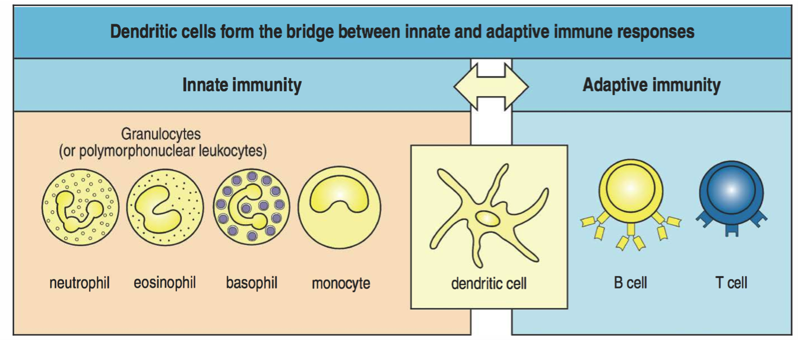
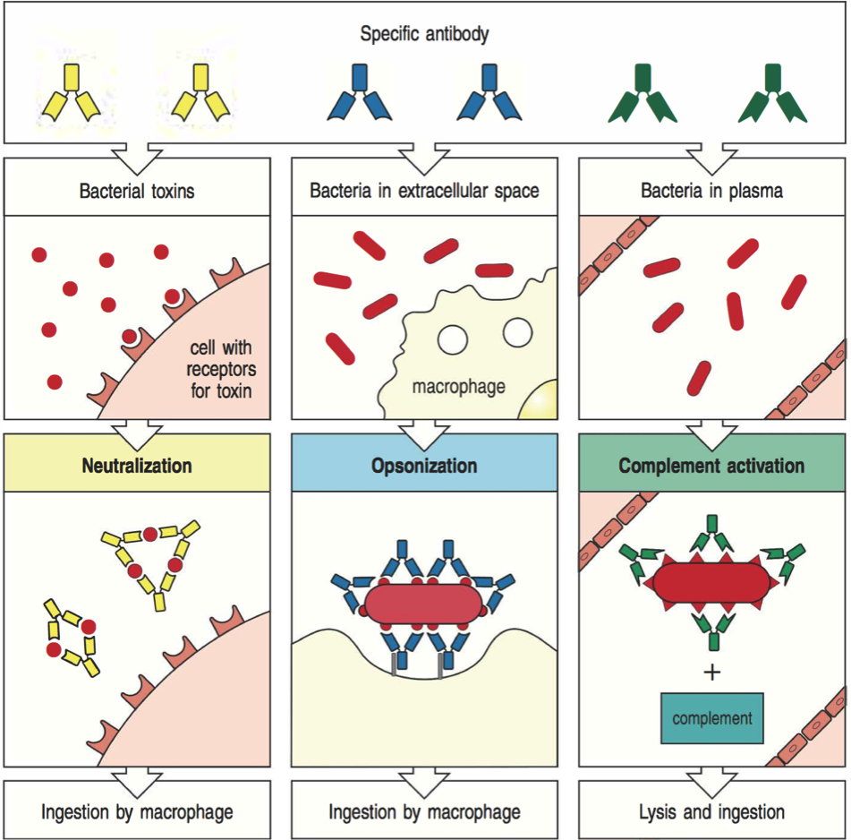
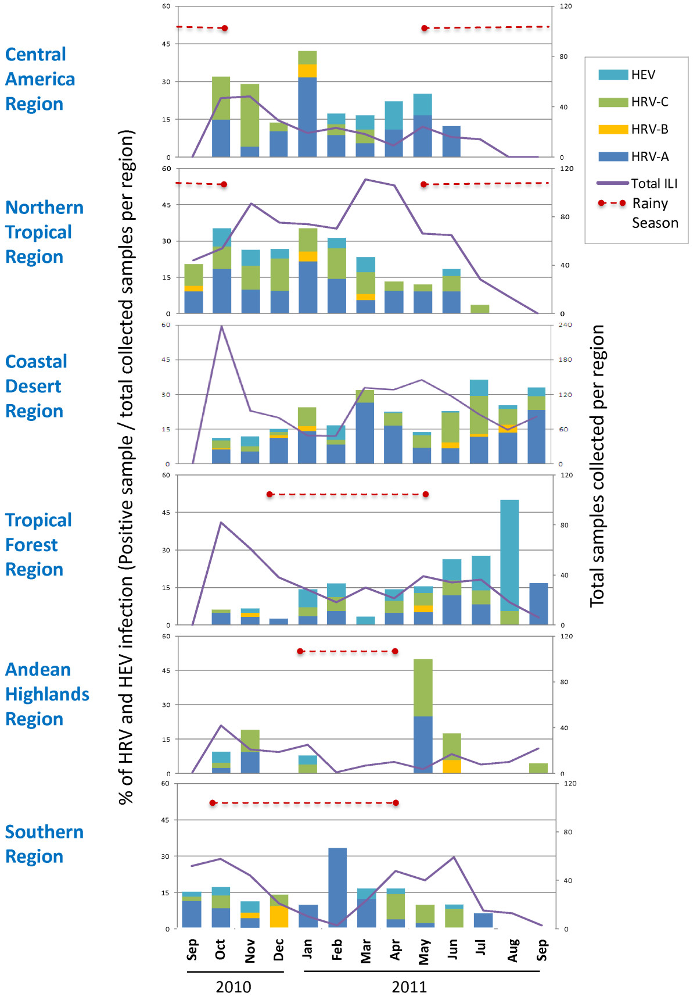
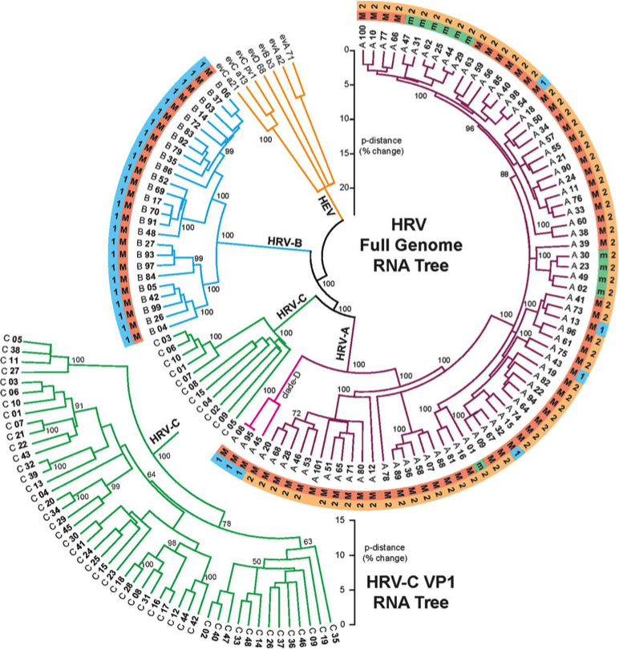
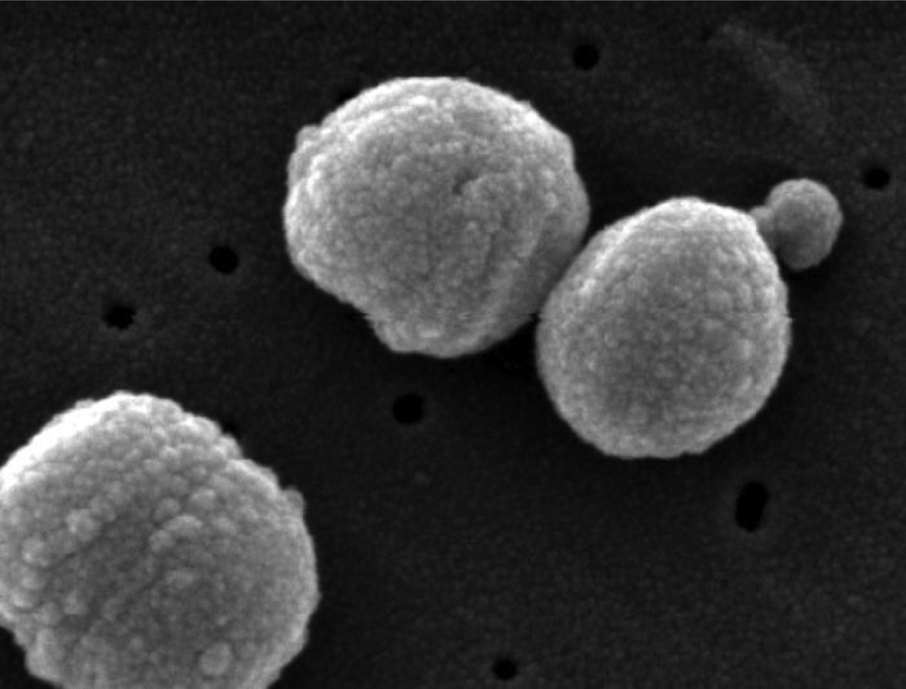

Immune-mediated competition
Influenza in St. Petersburg, 1968-2005

Infections in Seattle, 1924-1933

Malaria and rain in India, 1987-2007


Seemingly complex dynamics are common

...and correlations can mislead

Partial solution: Mechanistic models
$$H'=aH-bHL$$
$$L'=cHL-dL$$
$H$ hares, $L$ lynxes
hare birth rate $a$, predation rate $b$,
consumption rate $c$, death rate $d$
(working hypothesis)
Competition for susceptible hosts shapes the ecological and evolutionary dynamics of pathogens.
Implicit assumption of SIR model
The susceptible fraction determines a pathogen's growth rate
$$I' > 0 \Rightarrow \frac{\beta S}{N} > \gamma$$
What else should we consider?
Other possibilities
nonequilibrium dynamics
host population structure
stochasticity
virulence, resistance, tissue tropism
(and more)
Antigenic variation
Formally, variation in surface proteins
Broader concepts may be more useful
Immunity: Coordinated innate and adaptive responses
Innate immunity
Less specific
Nearly memoryless
Systemic or localized
Adaptive immunity
More specific
Some memory
Often systemic
Cellular immunity: Recognition of presented peptides

Humoral immunity: Recognition of structure
Escaping adaptive immunity
Hide
Suppress
Distract
Disguise
Outrun
What are the most common pathogens in humans?
What does their abundance have to do with their immune interactions?
Human papillomaviruses
Nearly 100% prevalence, but slow evolution

Enteroviruses: Common colds
Rhinoviruses include >100 serotypes
>90 serotypes of Streptococcus pneumoniae
Competition for susceptible hosts generates complex dynamics
Mechanistic models beat intuition
Pathogens interact with multiple immune populations
Pathogens show extensive diversity, including antigenic